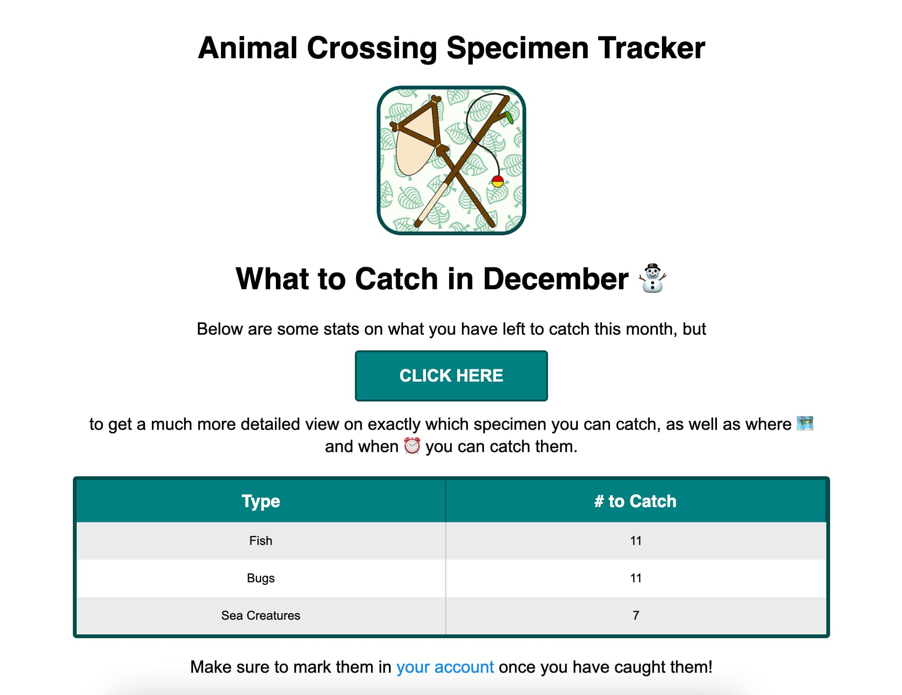

- 2020
- Preact
- Netlify Identity
- FaunaDB -> MongoDB
- Jest
- Enzyme
A tracking system for your Animal Crossing New Horizons fish, bugs, and sea creatures. Once you log in and mark everything that you have caught so far, you will get a monthly email notifying you of what you have left to catch for that specific month.
I originally made it for myself, but anyone can use it - just create an account and track your catches!
Sample email:

Source code in the Github repository.